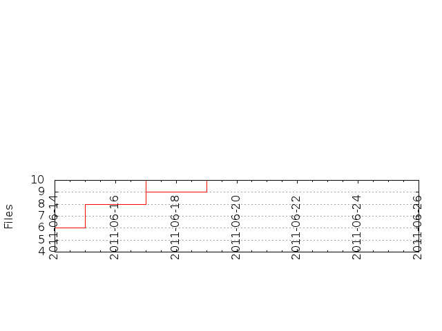

Files
General
Activity
Authors
Files
Lines
Tags
Total files
11
Total lines
1355
Average file size
12318.18 bytes
File count by date

Extensions
Extension
Files (%)
Lines (%)
Lines/file
1 (9.09%)
1 (0.07%)
1
example
1 (9.09%)
28 (2.07%)
28
js
7 (63.64%)
1319 (97.34%)
188
md
1 (9.09%)
4 (0.30%)
4